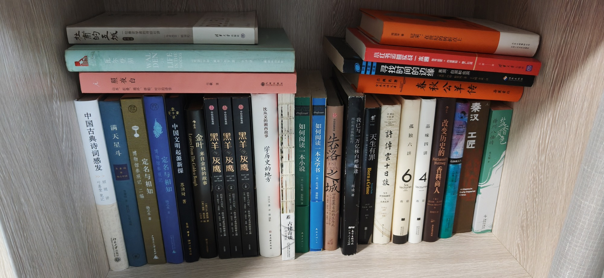

南房东第五层内

- 杜甫的五城：一位唐史学者的寻踪壮游 清华大学出版社
- 中国古典诗词感发 顾随讲 叶嘉莹笔记
- 瓦尔登湖 LIFE IN THE WOODS
- 满天星斗
- 照夜白：山水、折叠、循环、拼贴、时空的诗学
- 定名与相知：博物馆参观记 二编 扬之水
- 中国文明起源新探 苏秉琦著 生活·读书·新知三联书店
- 金叶：来自金枝的故事 Leaves From The Golden Bough
- 黑羊灰鹰：巴尔干六百年，一次苦难与希望的探索之旅 中信出版集团 BLACK LAMB AND GREY FALCON
- 沈从文的湘西故事：学历史的地方 沈从文著 卓雅摄影
- 古建奇谈：打开古建筑
- 如何阅读一本小说 （美）托马斯·福斯特
- 如何阅读一本文学书 （美）托马斯·福斯特
- 失落之城：四座世界古城的生与死
- 我已与一万亿株白桦相逢：西伯利亚铁路纪行 胡成著 广东人民出版社
- 天生有罪：特雷弗·诺亚的变色人生 Born a Crime
- 小红书运营实战一本通：账号运营+内容策划+推广引流
- 春秋公羊传 全本全译 岳麓书社
- 寻找时间的边缘：黑洞、白洞和虫洞 城南出版社
- 许倬云十日谈
- 尼采：在世纪的转折点上 周国平
- 孤独六讲 品味四讲 lectures Six
- 改变历史的香料商人 达洛维夫人
- 秦汉工匠 Artisans in Early Imperial
- 扬州八怪传 盐香风色
共 25 本书，上传于 2026-10-03 08:55:13。